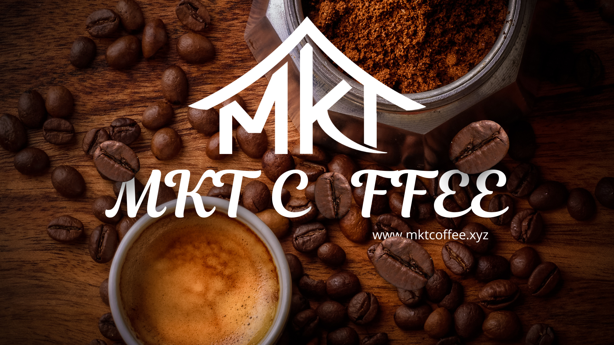

Hành Trình Từ Đất Đỏ Bazan
Khám phá câu chuyện thương hiệu MKT Coffee – nơi mỗi hạt cà phê mang theo hơi thở đại ngàn và giá trị nguyên bản.
☕ Giới thiệu về MKT Coffee
MKT Coffee được sinh ra từ vùng đất đỏ bazan Buôn Ma Thuột – nơi hội tụ tinh hoa cà phê Việt Nam. Thương hiệu ra đời với khát vọng nâng tầm hạt cà phê Việt, biến mỗi ly cà phê không chỉ là thức uống mà còn là một trải nghiệm văn hóa.
Trong bối cảnh thị trường cà phê ngày càng pha tạp và thiếu minh bạch, MKT Coffee ra đời với mong muốn giữ gìn giá trị nguyên bản: cà phê sạch – nguyên chất – rõ nguồn gốc.
Chúng tôi là cầu nối giữa giá trị truyền thống Tây Nguyên và tư duy hiện đại, mang đến những sản phẩm cà phê sạch, chất lượng cao và đầy cảm hứng.
Chúng tôi tin rằng, mỗi tách cà phê không chỉ là thức uống, mà là câu chuyện về đất, về người và về sự tử tế.

🌱 Tầm nhìn & Sứ mệnh
Tầm nhìn
Trở thành thương hiệu cà phê minh bạch hàng đầu tại Việt Nam, tiên phong trong việc đưa giá trị nguyên bản của cà phê Tây Nguyên đến gần hơn với người tiêu dùng hiện đại.
Sứ mệnh
- Mang đến cà phê sạch – chuẩn – tốt cho sức khỏe
- Đồng hành cùng nông dân với mô hình bền vững
- Bảo tồn văn hóa bản địa và cải thiện sinh kế cho người nông dân Đắk Lắk thông qua thương mại công bằng.
🔥 Triết lý thương hiệu
[M] - MOUNTAIN
Mỗi hạt cà phê là bản thể độc nhất, hội tụ nắng, gió và thổ dưỡng đặc hữu của vùng núi cao Tây Nguyên hùng vĩ.
[K] - KIND
Cam kết 100% nguyên chất, không pha tạp. Chúng tôi tử tế với đất mẹ, với người nông dân và chân thành với khách hàng.
[T] - TRACEABILITY
Minh bạch tuyệt đối. Bạn không chỉ thưởng thức hương vị, mà còn nhìn thấu toàn bộ hành trình từ nông trại đến mẻ rang.
☕ Sản phẩm nổi bật
1. Cà phê hạt rang xay nguyên chất
Arabica: Thanh nhẹ, hương thơm tinh tế, phù hợp gu hiện đại
Robusta: Đậm mạnh, giàu caffeine, chuẩn vị cà phê Việt
Moka & Culi: Hương vị đặc biệt, hậu vị sâu, dành cho người sành
2. Các dòng cà phê đặc trưng
Phân loại rõ ràng: Dễ lựa chọn theo gu và nhu cầu
Chất lượng ổn định: Rang xay đồng đều, giữ trọn hương vị
Phù hợp pha chế: Dùng cho pha phin, máy hoặc mix theo sở thích
3. Cà phê tiện lợi & quà tặng
Cà phê túi lọc: Pha nhanh, tiện lợi, vẫn đậm vị
Combo cà phê: Đóng gói đẹp, phù hợp làm quà tặng
Phiên bản giới hạn: Cà phê đặc biệt, dành cho dịp lễ hoặc sự kiện
⭐ Điểm khác biệt tại MKT Coffee
[M] - Mountain: Di sản từ vùng Đất Đỏ
Chúng tôi không coi Đắk Lắk chỉ là "vùng nguyên liệu", mà là một Di sản (Heritage). Mỗi hạt cà phê MKT là một bản thể độc nhất, hội tụ trọn vẹn tinh hoa của nắng gió đại ngàn và thổ nhưỡng bazan đặc hữu. Chúng tôi tôn trọng bản sắc tự nhiên, mang đến hương vị nguyên bản mà không máy móc hay phòng thí nghiệm nào có thể sao chép được.
[K] - Kind: Sự tử tế là "Hệ điều hành"
Tại MKT, công nghệ rang hiện đại chỉ là công cụ để hiện thực hóa Sự tử tế. Chúng tôi cam kết đạo đức kinh doanh xuyên suốt chuỗi cung ứng: Tử tế với người nông dân qua thương mại công bằng, tử tế với môi trường qua canh tác bền vững, và chân thành với khách hàng bằng cam kết "3 KHÔNG" (Không độn - Không hóa chất - Không hương liệu).
[T] - Traceability: Minh bạch là Ngôn ngữ Niềm tin
Sự khác biệt cốt lõi của MKT nằm ở khả năng Truy xuất nguồn gốc tuyệt đối. Chúng tôi trao quyền cho bạn nhìn thấu "hành trình của hạt" – từ tên nông trại, ngày thu hoạch đến mẻ rang. Giữa thị trường đầy rẫy sự mập mờ, chữ "T" là ngọn hải đăng giúp bạn an tâm thưởng thức vị cà phê sạch và cảm nhận sự kết nối chân phương như đang ở nhà.